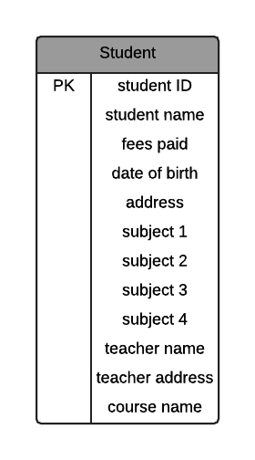
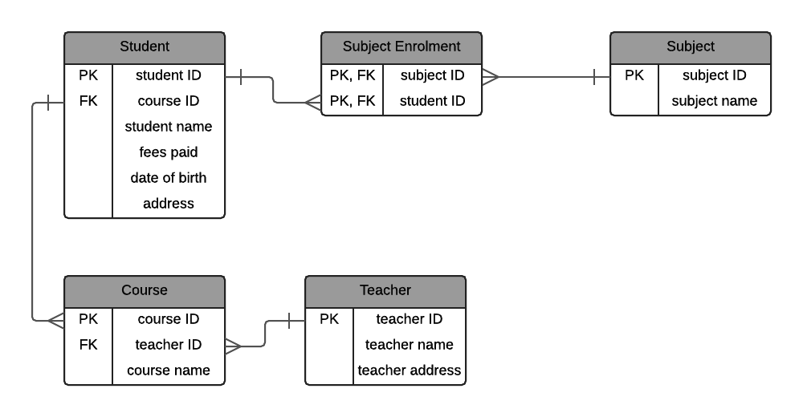
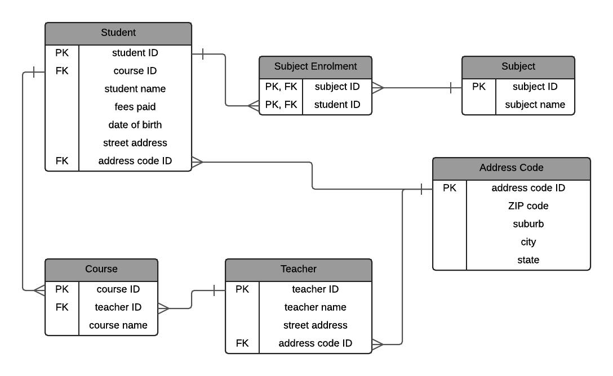
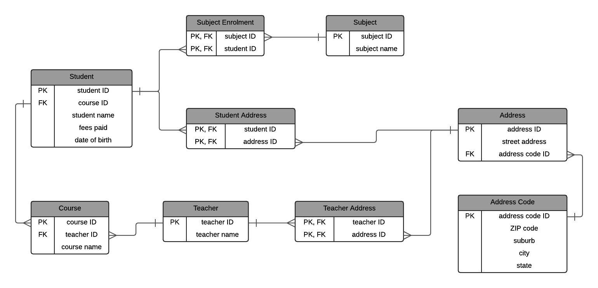

Normalización

Normalización de bases de datos y formas normales
Noviembre 24, 2024 publicado por Ana María Zapata
El diseño de bases de datos relacionales evolucionó rápidamente y se encuentra en un alto nivel de estandarización en la actualidad. En esta cuarta entrada de la serie de bases de datos, se abordará el tema de la normalización y las formas normales con la intención de dar respuesta a dos preguntas académicas claves:
¿qué es la normalización de bases de datos?
¿Qué formas normales existen?
Iniciaremos con la definición del proceso de normalización para después abordar las formas normales en detalle.
Definición
La normalización es un proceso de diseño de bases de datos que organiza los datos para reducir redundancia y mejorar la integridad. A través de este proceso, las tablas de una base de datos se dividen en subconjuntos más pequeños con relaciones definidas, asegurando que cada tabla almacene un solo tema o entidad. La normalización implica estructurar una base de datos conforme a un conjunto de reglas (formas normales) que garantizan:
Eliminación de redundancia de datos.
La minimización de anomalías al insertar, actualizar o eliminar datos.
Una vez definido el concepto de normalización continuamos con la definición de las formas normales hallado al confrontar diversas fuentes en línea (este apartado responde a la pregunta "¿Qué es la normalización de base de datos?").
Proceso de normalización y formas normales
El proceso de normalización consiste en aplicar reglas a un conjunto de datos. Cada una de estas reglas transforma los datos en una estructura determinada, denominada forma normal.
Hay tres formas normales principales que debe tener en cuenta (en realidad, hay seis formas normales en total, pero las tres primeras son las más comunes).
Cuando se aplica la primera regla, los datos están en primera forma normal. A continuación, se aplica la segunda regla y los datos están en segunda forma normal. Cuando se aplica la tercera regla, los datos están en tercera forma normal. Las formas normales cuarta y quinta se obtienen a partir de sus reglas específicas (este apartado responde a la pregunta "¿Qué formas normales existen?").
Primera forma Normal (1NF)
Las reglas para la primera forma normal son las siguientes:
Cada columna contiene un único valor atómico.
Cada fila es única.
Ejemplo: Una tabla que combina múltiples valores en una celda (por ejemplo, varios cursos asociados a un estudiante) se separa en filas individuales para cumplir con 1NF.
La siguiente ilustración muestra la primera forma normal para la entidad estudiante:
Segunda forma Normal (2NF)
Las reglas para la segunda forma normal son las siguientes:
Cumple con 1NF.
Toda columna no clave depende completamente de la clave primaria.
El proceso a seguir en la segunda forma normal consiste en determinar si existe dependencia parcial (algunas columnas dependen de una parte de la clave compuesta), si es así; se dividen en tablas separadas.
El diagrama más abajo muestra la segunda forma normal para la entidad estudiante y las tablas relacionadas profesor, curso y asignatura:
Tercera forma Normal (3NF)
Las reglas para la tercera forma normal son las siguientes:
Cumple con 2NF.
No hay dependencias transitivas (columnas no clave no dependen de otras columnas no clave).
El proceso a seguir en la tercera forma normal consiste en eliminar dependencias transitivas creando tablas adicionales para almacenar datos dependientes.
El diagrama relacional que se ilustra más abajo presenta la tercera forma normal para el ejemplo de estudiante, curso, asignatura, profesor y dirección:
Forma Normal de Boyce-Codd (BCNF)
Las reglas para la forma normal de Boyce-Codd son las siguientes:
Cumple con 3NF.
Cada determinante (columna de la cual depende otra columna) es una clave candidata.
Cuarta forma Normal (4NF)
Las reglas para la cuarta forma normal son las siguientes:
Cumple con BCNF.
No hay dependencias multivaluadas (una fila no debería contener más de un conjunto de valores multivaluados para una clave primaria).
El diagrama relacional que se ilustra más abajo presenta la cuarta forma normal para el ejemplo de estudiante, curso, asignatura, profesor y dirección desagregando la dependencia multivaluada para profesor, estudiante y código de dirección:
Quinta forma Normal (5NF)
Las reglas para la quinta forma normal son las siguientes:
Cumple con 4NF.
Las tablas se descomponen únicamente cuando es necesario preservar dependencias de unión.
Sexta forma Normal (6NF)
Aunque no está estandarizada, aborda problemas adicionales relacionados con bases de datos temporales y especificaciones avanzadas.
Un recurso que se considera relevante para ampliar la comprensión del proceso de normalización de bases de datos es el siguiente:
Ventajas de la Normalización
Algunas de las diversas ventajas de implementar un proceso de normalización en el diseño de sistemas de información incluyen:
Reducción de Redundancia: Los datos duplicados se eliminan.
Mejora en Consistencia: Los datos se actualizan en un único lugar, minimizando errores.
Ahorro de Espacio: Menor duplicación reduce el uso de almacenamiento.
Consulta Más Eficiente: Las estructuras más simples son más rápidas para procesar.
Facilidad de Mantenimiento: Las relaciones entre datos están mejor definidas, lo que simplifica el mantenimiento.
Limitaciones de la Normalización
Existen pocas limitaciones a considerar al implementar un proceso de normalización:
Complejidad: Puede requerir más tablas y consultas complejas.
Rendimiento: La descomposición en múltiples tablas puede aumentar el tiempo de respuesta para consultas complejas.
Sobrecarga Inicial: Requiere planeación y diseño cuidadoso al inicio.
Fuentes consultadas
(incluye recursos de recuperación de imágenes)
- Database Star - Normalización de bases de datos: Una guía paso a paso con ejemplos
- Analytics Vidhya, Sathish, 2024 - Normalización: Guía paso a paso con ejemplos
- Free Code Camp - Chris Kolade, 2023 - Normalización de bases de datos formas normales 1,2,3 con ejemplos de tablas
- Guru99- Marcus Allen, 2024 - Normalización de DBMS : Ejemplo de base de datos en 1NF, 2NF, 3NF
- Hackr.io- Aman Goel, 2023 - Normalización en DBMS: 1NF, 2NF, 3NF, y BCNF [Ejemplos]
Rebobinar entrada